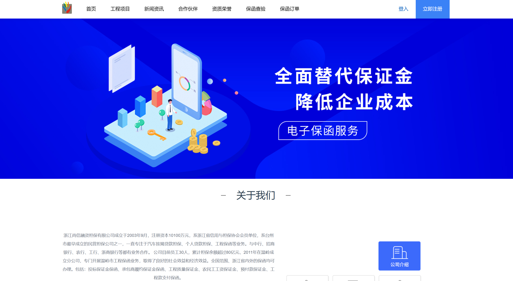

shangxiao.github.io
web前端工程师 - 李上校
个人项目
电子保函系统-官网
官网地址：https://test.jdbsz.com/#/index
项目描述：该官网是面向于客户群体，客户可在该官网上挑选项目信息进行下单，支付，退款，以及对订单完成之后的发票查看保函查看，该系统支持多种支付银行对公转账，支付宝支付，微信支付等方式。
工作职责：
- 负责系统日常中出现的BUG等问题进行修复（如订单中出现数据异常，进行排查错误，按照排查错误的结果进行修复相关的问题等）。
- 根据系统日常使用的情况适当增加需求（增加第三方支付的功能包括微信支付，积分支付，完成合作公司的数据交互等）。
- 搭建测试环境电子保函系统，购买阿里云服务器在Linux系统中部署docker容器，在docker容器中部署mysql，MongoDB,redis，再部署Nginx等。
电子保函系统-后台
后台地址：https://testadmin.jdbsz.com/#/login

项目描述：该后台是面向于企业人员，管理员可对不同企业人员赋予不同管理权限，其中包含订单记录，项目管理，项目模板，公司管理，发票管理，银行账单，业绩报表等
工作职责：
- 与第三方公司合作交流，制定第三方接口，以及书写文档接口。和第三方技术人员沟通对第三方接口的对接，调试，联调。
- 根据系统日常使用的情况适当增加需求（增加业绩报表，单日数据量统计，操作记录等功能）。
- 负责系统日常中出现的BUG等问题进行修复（如银行接口中的数据异常问题，进行检测并于银行技术人员沟通处理）。
电子保函系统-小程序
小程序地址：

个人信息
姓名：李上校
年龄：24
学历：本科
邮箱：915766253@qq.com
GitHub: https://github.com/jeremyxixi
技术栈
- 熟练使用 HTML、CSS 和 TypeScript 构建高性能 Web 应用程序，了解 Web Components 规范。
- 熟练使用 Vue3 能使用Vue3独立进行项目的开发 ，了解go语言，Mysql数据库。
- 熟练使用 Element-Plus,Ant Design, Echarts框架开发项目 ，熟悉微信小程序，uniapp。
- 熟悉使用git进行版本管理，掌握基本的git命令。熟悉webpack配置以及打包过程。
教育经历
- 数据科学与大数据技术 | 统招全日制本科
万里学院
项目经历
台州乐一软件有限公司
前端开发实习生
2022 年 02 月 - 2022 年 08 月
项目职责：